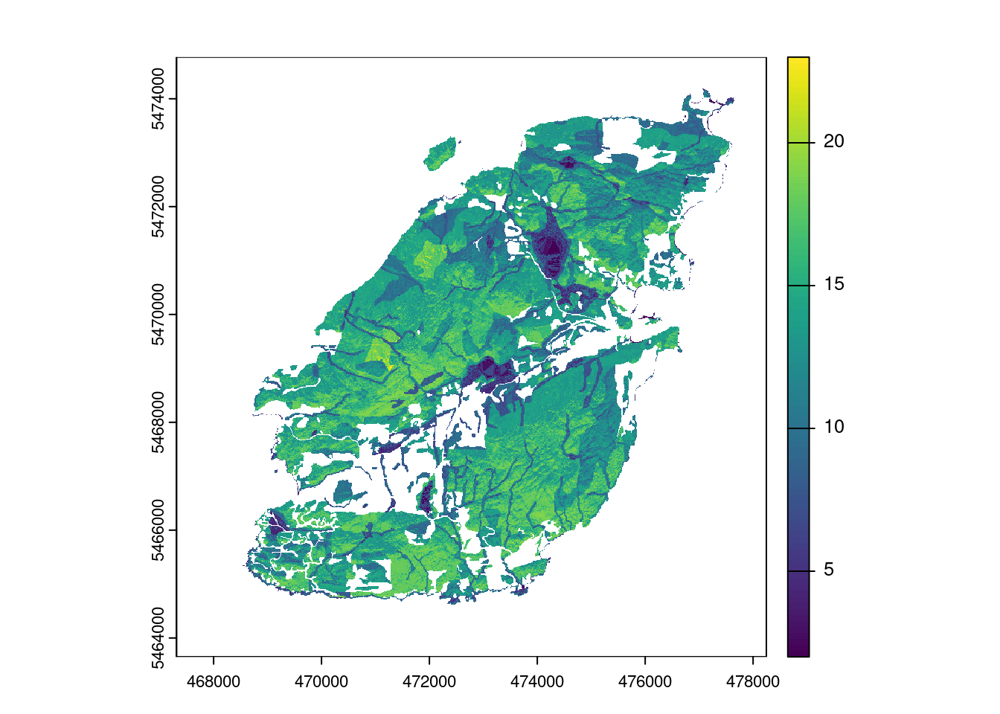

Code
library(bowen.biodiversity.webapp)
library(here)
library(sf)
library(ggplot2)
library(leaflet)
library(tidyverse)
library(terra)library(bowen.biodiversity.webapp)
library(here)
library(sf)
library(ggplot2)
library(leaflet)
library(tidyverse)
library(terra)Sources: https://www2.gov.bc.ca/gov/content/safety/wildfire-status/prevention/fire-fuel-management/wui-risk-class-maps/wui-downloads https://www.for.gov.bc.ca/ftp/HPR/external/!publish/WUI_RiskClass/Maps/Coast/WUI_RiskClass_36x48L_92G_SW.pdf  Previous to this step, the KMZ files were loaded into QGIS and clipped to
Previous to this step, the KMZ files were loaded into QGIS and clipped to data-raw/bowen_boundary/Bowen_boundary.shp. This clipped KMZ was saved as data-raw/bowen_wui.gpkg.
bowen_wui <- here("data-raw/bowen_wui.gpkg") %>%
st_read() %>%
select(Name, PSTA) %>%
rename(WUI = Name) %>%
mutate(WUI_PSTA = paste0(WUI, "_", PSTA))Reading layer `bowen_wui' from data source
`/home/jay/Programming_Projects/bowen.biodiversity.webapp/data-raw/bowen_wui.gpkg'
using driver `GPKG'
Simple feature collection with 115 features and 15 fields
Geometry type: MULTIPOLYGON
Dimension: XYZ
Bounding box: xmin: -123.4291 ymin: 49.33442 xmax: -123.3084 ymax: 49.41975
z_range: zmin: 0 zmax: 0
Geodetic CRS: WGS 84ggplot(bowen_wui) +
geom_sf(aes(fill = PSTA))
ggplot(bowen_wui) +
geom_sf(aes(fill = WUI))
ggplot(bowen_wui) +
geom_sf(aes(fill = WUI_PSTA))
bowen_mask <- here("inst/extdata/bowen_mask.tif") %>% rast()
bowen_wui_vect <- bowen_wui %>% vect() %>% project(bowen_mask)
bowen_wui_rast <- bowen_wui_vect %>%
rasterize(bowen_mask, "WUI_PSTA", touches = T)Objective: Index of Vulnerability to Fire. We are not trying to assess the probability of fire nor how hot it might burn or its behavior. Instead, we want to know the relative vulnerability to biodiversity loss due to fire, if habitats were to burn.
Three major components of vulnerability:
Slope. Fires spread more quickly when they move uphill. Relative ranking might look like this:
1 0-10 degree slopes: lower vulnerability 2 10-30 degrees: moderate vulnerability 3 Above 30 degrees: higher vulnerability
Aspect. Southerly exposures burn hotter, fire spreads more quickly, effects more uniform and destructive than on northern exposures, all else being equal. Might consider this as a first approximation: 1 0-45: Low vulnerability because fires unlikely to spread as fast or burn as hot 2 45-90: moderately low 4 90-135: moderately high 6 135-225: southerly exposures burn hotter, spread quickly and more uniformly 4 225-270: Moderately high 2 270-315 Moderately low 1 315-360: Low vulnerability
Fuels. On Bowen, the main differences in fuel loads have to do with whether a location is forested or not forested. Forested areas burn hotter and longer and long, hot burns have a more detrimental effect that shorter less intense fires. So the main distinctions should be made between forested and unforested. Forest stands comprised of larger trees are, of course, of higher value to biodiversity than denser stands with smaller trees, so we would like to be able to distinguish between forest structures to some degree. At the same time, when more mesic habitats burn the biodiversity effects tend to be high, because species are not adapted to fire. So we will need to rank habitats based on the differential effects of forest fuels present, as well as the difference in flora and fauna that make those locations more or less vulnerable in terms of biodiversity loss. First Cut Ranking Scheme: 14 Forest, large/old trees 10 Forest, mature second growth 6 Forest, young regrowth 6 Shrublands 2 Grasslands: often burn and effects are modest, even positive in some cases 4 Riparian: seldom burns, but if it burns biodiversity effects may be very negative 2 Wetlands: seldom burn, more often they create fire breaks 0 Water: does not burn, but is vulnerable to ash deposition NA Built environment: NA (default to WUI map when talking about the built environment
I suggest that we think about these basic ideas:
We pursue an index of vulnerability, rather than a more sophisticated approach to modeling fire or adapting an index that was developed for other purposes (i.e. WUI).
We create a simple index that allows us to compare the relative vulnerability of all locations on Bowen (with the exception of the built environment).
We consider slope, aspect, and fuels by habitat as the three components of an index.
We determine the relative ranks within each of the three components
Integrate the scores into an index that produces an aggregate vulnerability index score for each pixel. As a first approximation, this should be the additive (sum) of the three components – and then let’s see how that performs.
# Slope Score
## Create slope raster from LiDAR data
slope <- rast(here("data/bowen_slope.tif"))
## Create matrix of scores
### 1 0-10 degree slopes: lower vulnerability
### 2 10-30 degrees: moderate vulnerability
### 3 Above 30 degrees: higher vulnerability
slope_m <- matrix(c(
0, 10, 1,
10, 30, 2,
30, 91, 3
), ncol = 3, byrow = T)
## Classify original slope raster to slope score
slope_score <- slope %>%
classify(slope_m)
# Aspect Score
## Create aspect raster from LiDAR data
aspect <- rast(here("data/bowen_aspect.tif"))
## Create matrix of scores
### 1 0-45: Low vulnerability because fires unlikely to spread as fast or burn as hot
### 2 45-90: moderately low
### 4 90-135: moderately high
### 6 135-225: southerly exposures burn hotter, spread quickly and more uniformly
### 4 225-270: Moderately high
### 2 270-315 Moderately low
### 1 315-360: Low vulnerability
aspect_m <- matrix(c(
0, 45, 1,
45, 90, 2,
90, 135, 4,
135, 225, 6,
225, 270, 4,
270, 315, 2,
315, 360, 1
), ncol = 3, byrow = T)
## Classify original aspect raster to aspect score
aspect_score <- aspect %>%
classify(aspect_m)
# Fuel Score
## Get habitat classes from combination of WUI, MVSEI, TEM, AW layers
mv_sei <- st_read(here("data-raw/metrovancouver_sensitive_ecosystem_inventory/Sensitive_Ecosystem_Inventory_for_Metro_Vancouver__2020__-5580727563910851507.gpkg")) %>%
st_transform(project_crs) %>%
st_crop(bowen_boundary) Warning in CPL_read_ogr(dsn, layer, query, as.character(options), quiet, : GDAL
Message 1: This version of GeoPackage user_version=0x000028A0 (10400, v1.4.0)
on
'/home/jay/Programming_Projects/bowen.biodiversity.webapp/data-raw/metrovancouver_sensitive_ecosystem_inventory/Sensitive_Ecosystem_Inventory_for_Metro_Vancouver__2020__-5580727563910851507.gpkg'
may only be partially supportedReading layer `Sensitive_Ecosystem_Inventory_for_Metro_Vancouver__2020_' from data source `/home/jay/Programming_Projects/bowen.biodiversity.webapp/data-raw/metrovancouver_sensitive_ecosystem_inventory/Sensitive_Ecosystem_Inventory_for_Metro_Vancouver__2020__-5580727563910851507.gpkg'
using driver `GPKG'Warning in CPL_read_ogr(dsn, layer, query, as.character(options), quiet, : GDAL
Message 1: Non-conformant content for record 1 in column SourceDate,
2011-04-29T00:00:00.0Z, successfully parsedSimple feature collection with 25637 features and 99 fields
Geometry type: MULTIPOLYGON
Dimension: XYZ
Bounding box: xmin: 468516.6 ymin: 5427679 xmax: 547072.5 ymax: 5495732
z_range: zmin: 0 zmax: 0
Projected CRS: NAD83 / UTM zone 10NWarning: attribute variables are assumed to be spatially constant throughout
all geometriesmv_sei_secl_codes <- read.csv(here("data-raw/metrovancouver_sensitive_ecosystem_inventory/SEI_SECl_codes.csv"))
## Generate fuel score raster based on habitat type
### 14 Forest, large/old trees
### 10 Forest, mature second growth
### 6 Forest, young regrowth
### 6 Shrublands
### 2 Grasslands: often burn and effects are modest, even positive in some cases
### 4 Riparian: seldom burns, but if it burns biodiversity effects may be very negative
### 2 Wetlands: seldom burn, more often they create fire breaks
### 0 Water: does not burn, but is vulnerable to ash deposition
### NA Built environment: NA (default to WUI map when talking about the built environment
### Using SEI
### TODO: use A. Whitehead wetland and freshwater layers
mv_sei_mod <- mv_sei %>%
select("SECl_1", "SEsubcl_1", "SECl_2") %>%
filter(!str_detect(SECl_1, "x")) %>% # remove lost habitats
mutate(
fuel_score =
case_when(
SECl_1 == "OF" ~ 14,
SECl_1 == "MF" ~ 10,
SECl_1 == "YF" ~ 6,
SECl_1 == "YS" ~ 6,
SECl_1 == "WD" ~ 6, # TODO: what score for "Woodland" category?
SECl_1 == "HB" & SEsubcl_1 == "sh" ~ 6, # Herbaceous, shrub
SECl_1 == "HB" & SEsubcl_1 != "sh" ~ 2, # Herbaceous, non-shrub
SECl_1 == "RI" ~ 4, # "Riparian"
SECl_1 == "WN" ~ 2, # "Wetland"
SECl_1 == "OD" ~ 2, # "Old Field"
SECl_1 == "SV" ~ 0, # TODO: what score for "Sparsely Vegetated" category?
SECl_1 == "IT" ~ 0, # TODO: what score for "Intertidal" category?
SECl_1 == "FW" ~ 0,
# Deal with XX Non-SE
SECl_1 == "XX" & SECl_2 == "MF" ~ 10,
SECl_1 == "XX" & SECl_2 == "YS" ~ 6,
SECl_1 == "XX" & SECl_2 == "WD" ~ 6,
SECl_1 == "XX" & SECl_2 == "RI" ~ 4,
SECl_1 == "XX" & SECl_2 == "SV" ~ 0,
)
)
# Rasterize habitat polygons fuel score
fuel_score <- mv_sei_mod %>%
vect() %>%
project(aspect_score) %>%
rasterize(aspect_score, field = "fuel_score")
# Cumulative Fire Vulnerability Index
fire_index <- slope_score + aspect_score + fuel_score
plot(fire_index)